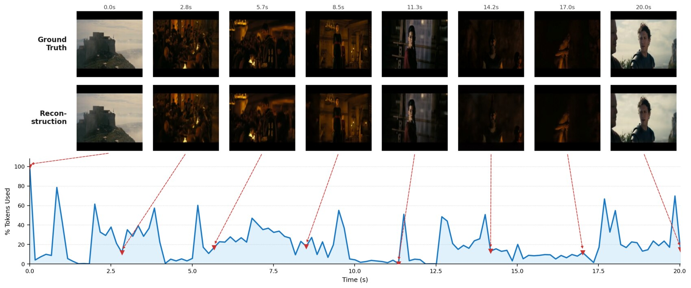
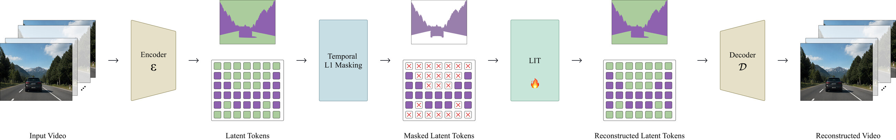
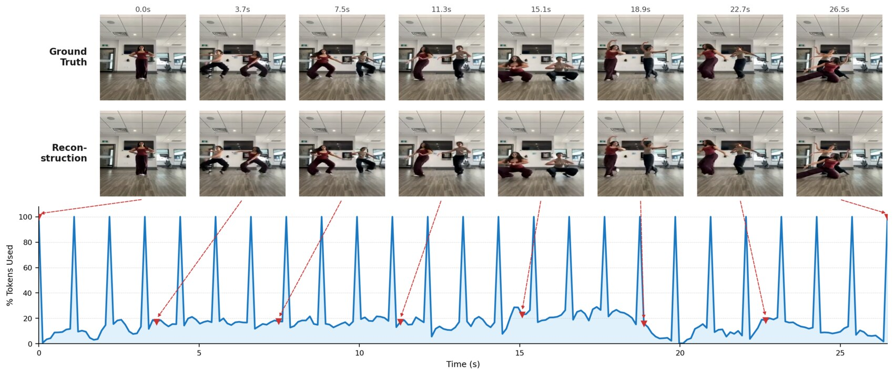
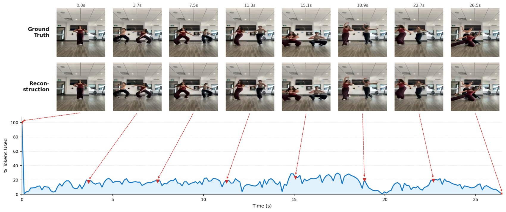

Adaptive Tokenisation via Temporal Redundancy Masking and Latent Inpainting
A video tokeniser that decides its own token budget from the encoder pass alone — no router, no scorer, no extra decoder pass. 31× faster allocation than search-based adaptive tokenisers at a matched keep rate.

Video tokenisers spend a fixed token budget on every clip: a static shot and a fight scene cost exactly the same. Adaptive tokenisers fix that, but pay a search or routing tax — ElasticTok runs a binary search over log₂N decoder passes, InfoTok needs an extra full-rate decoder pass.
We show that overhead is unnecessary. The latent space of a frozen continuous tokeniser already exposes temporal redundancy: if a latent position barely changed since the last kept frame, drop it — and inpaint it back before decoding. A parameter-free temporal-L1 criterion produces the mask directly from the encoder output, and a 2.7 M-parameter Latent Inpainting Transformer (LIT) refills the dropped positions in the backbone's native latent space.
The result is a tokeniser whose compression rate emerges from the video rather than being imposed on it, controlled by a single interpretable scalar τ, with zero extra forward evaluations to allocate the budget.

Temporal-L1 masking
Each latent position is judged against its own history: how far has it moved since the last time this position was kept? The distance is a channel-averaged absolute difference — nothing learned, nothing tuned.
That is the whole criterion. τ is a single scalar, calibrated once per backbone — 0.3 for Cosmos, 1.2 for Omni — and the full formulation is in the paper.
Latent Inpainting Transformer
LIT refills the dropped positions before decoding, using interleaved spatial and temporal attention with 2D RoPE instead of full 3-D attention.
Because it is supervised on the latents as well as the decoded pixels, its output stays in the backbone's native latent space — a drop-in for anything that consumes those latents.
Inference is a single encoder pass, a threshold comparison, and one LIT forward — the mask costs nothing beyond the encoding that was already happening.
Per clip on a single A10G. NFE counts the extra forward evaluations needed to set the budget. Ours needs none — the mask falls out of the encoder pass.
Raising τ peels the static background away first and keeps the moving subject longest. Drag to sweep the threshold on a real clip.
Sweeping the single threshold traces a smooth, monotonic rate–distortion curve on DAVIS — no retraining, one calibration per backbone. Red annotations give the change from the neighbouring operating point.
At 21–61% of the tokens we stay on par with ElasticTok at 80–100%, and with the full-rate Cosmos backbone. Drag the handle to wipe between the ground truth and the selected method.
Three UCF-101 clips, three frames each. Our keep rates are printed on the first frame of each clip.
Baselines are matched to us — InfoTok to our emergent keep rate, ElasticTok-CV to a strict error threshold. At an identical budget we gain +2.81 dB (TokenBench) and +2.47 dB (DAVIS) over InfoTok.
Streaming with a cached reference
A long video is encoded chunk by chunk. Without caching, every chunk restarts its own reference and pays a full-rate frame; carrying the last kept latent across the chunk boundary removes those resets entirely.


Ablations — DAVIS, 62% keep rate
Fidelity comes from the inpainting: LIT gains +0.7 dB and −170 FVD over copying the last kept latent.
@inproceedings{dave2026adaptive,
title = {Adaptive Tokenisation via Temporal Redundancy Masking
and Latent Inpainting},
author = {Dave, Kevin and Patkuri, Sai Aditya and Das, Chhaya Kumar
and Bala, Gouranga and S A, Rajesh Kumar
and Babu, R. Venkatesh},
booktitle = {British Machine Vision Conference (BMVC)},
year = {2026}
}